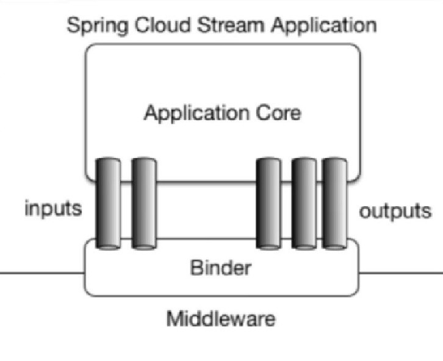

SpringCloud-Stream 使用记录
为何使用Stream？
实现消息的收发可以用许多种方式来实现，如Kafka，RabbitMQ等，而通过Stream可以方便地通过一个Binder对象与这些不同的实现工具对接，应用程序通过Inputs和Outputs来与Binder交互即可实现消息的收发，这样我们就只需要知道如何与Stream交互即可方便地使用消息驱动。
下图即Stream工作原理：

Stream使用记录
一、依赖导入
除去一些基本依赖之外，发布端和订阅端均导入：
1<dependency>
2 <groupId>org.springframework.cloud</groupId>
3 <artifactId>spring-cloud-starter-stream-rabbit</artifactId>
4</dependency>
二、基本配置
发布端：
1spring:
2 cloud:
3 stream:
4 binders:
5 defaultRabbit:
6 type: rabbit
7 environment:
8 spring:
9 rabbitmq:
10 host: localhost
11 port: 5672
12 username: guest
13 password: guest
14 bindings:
15 output:
16 destination: myExchange
17 content-type: application/json
18 binder: defaultRabbit
订阅端：
1spring:
2 cloud:
3 stream:
4 binders:
5 defaultRabbit:
6 type: rabbit
7 environment:
8 spring:
9 rabbitmq:
10 host: localhost
11 port: 5672
12 username: guest
13 password: guest
14 bindings:
15 input:
16 destination: myExchange
17 content-type: application/json
18 binder: defaultRabbit
19 group: jzh1
注意，两个订阅端如果实现同一微服务，group应该一样，这样，在同一个组内会发生竞争关系，只有其中一个可以消费（默认采用轮询的机制处理），避免了出现重复消费的问题。
三、发送端代码编写
（1）编写IMessageProvider接口并实现：
IMessageProvider.java:
1public interface IMessageProvider {
2 String send();
3}
MessageProviderImpl.java
1@EnableBinding(Source.class)
2public class MessageProviderImpl implements IMessageProvider {
3 @Resource
4 private MessageChannel output;
5
6 @Override
7 public String send() {
8 String s = IdUtil.simpleUUID();
9 output.send(MessageBuilder.withPayload(s).build());
10 return s;
11 }
12}
- Source代表为消息来源方；
- MessageChannel是应用与Binder之间建立的通道，通过它收发消息；
- send()方法处理参数为Message类型。
（2）编写controller，用于发送消息：
1@RestController
2public class SendController {
3 @Resource
4 private IMessageProvider messageProvider;
5
6 @GetMapping("/msg")
7 public String sendMsg() {
8 return messageProvider.send();
9 }
10}
四、订阅端代码编写
编写controller，用于接收并打印消息：
1@Component
2@EnableBinding(Sink.class)
3public class GetController {
4 @Value("${server.port}")
5 private String port;
6
7 @StreamListener(Sink.INPUT)
8 public void input(Message<String> msg) {
9 System.out.println("consumer(port=" + port + "), receive msg:" + msg.getPayload());
10 }
11}
- Sink表示是消息接收方；
- 通过@StreamListener实现消息的监听。
测试
- 开启RabbitMQ服务，打开图形管理界面（默认15672端口）；
- 开启各微服务，发送端通过
/msg接口发送消息； - 订阅端在控制台成功监听到消息，由于在同一组中，可见消息交替出现。